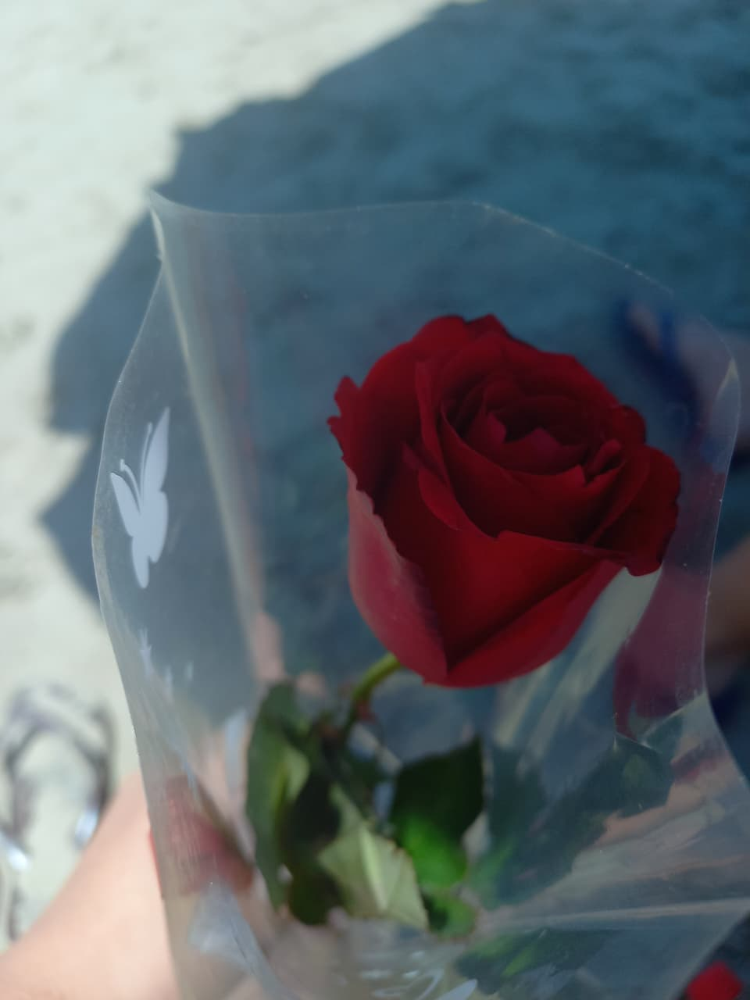
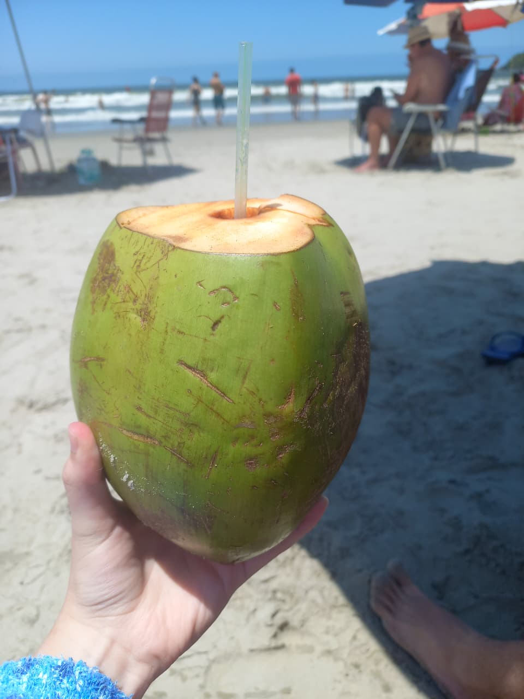
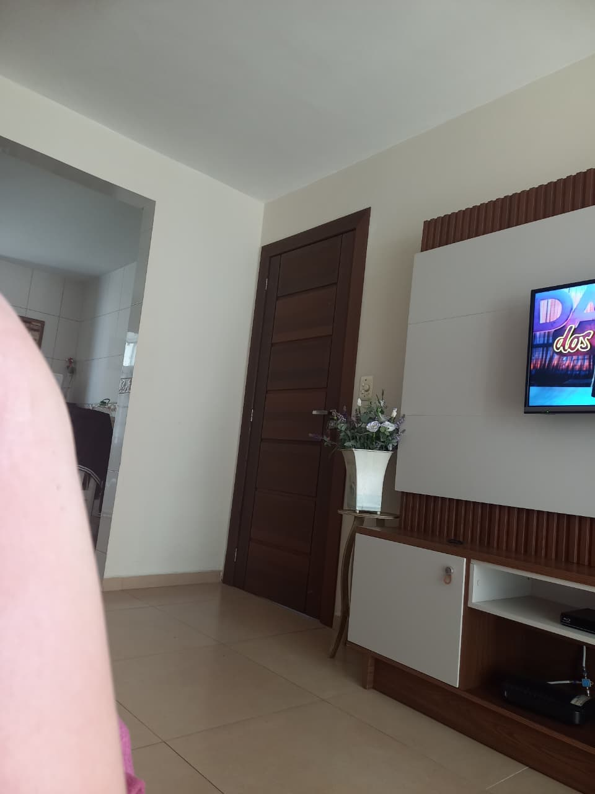
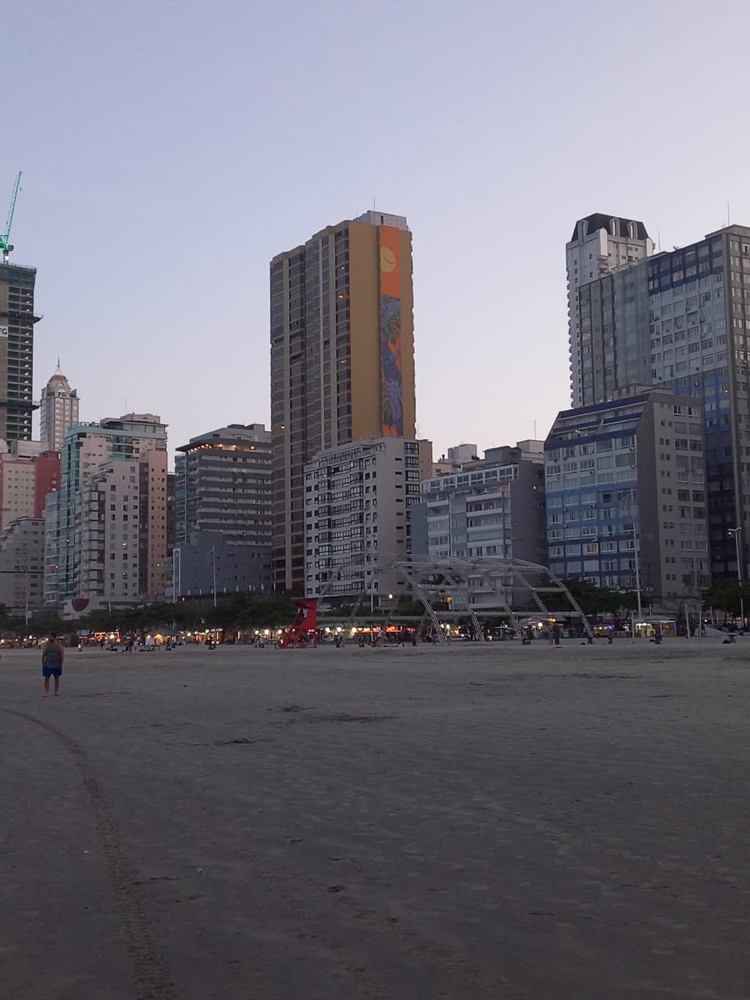
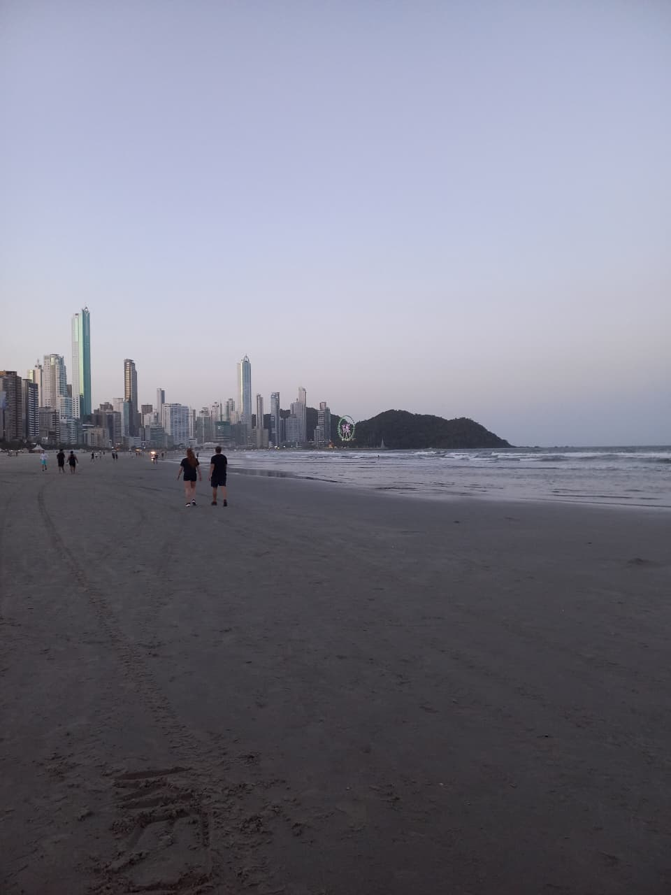
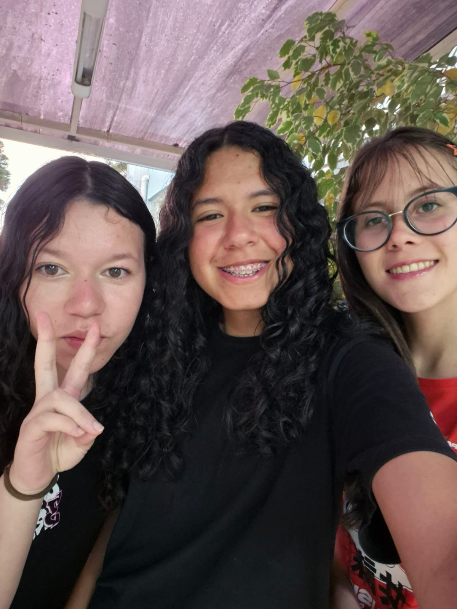
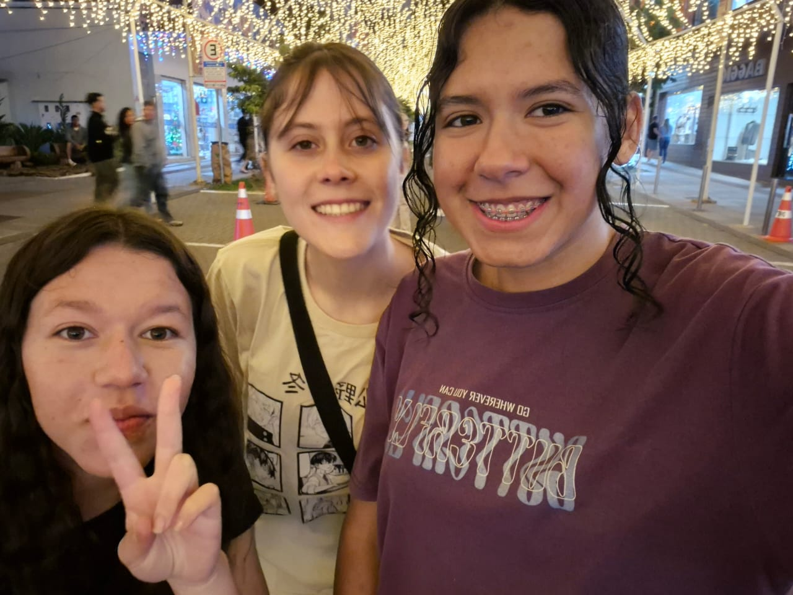
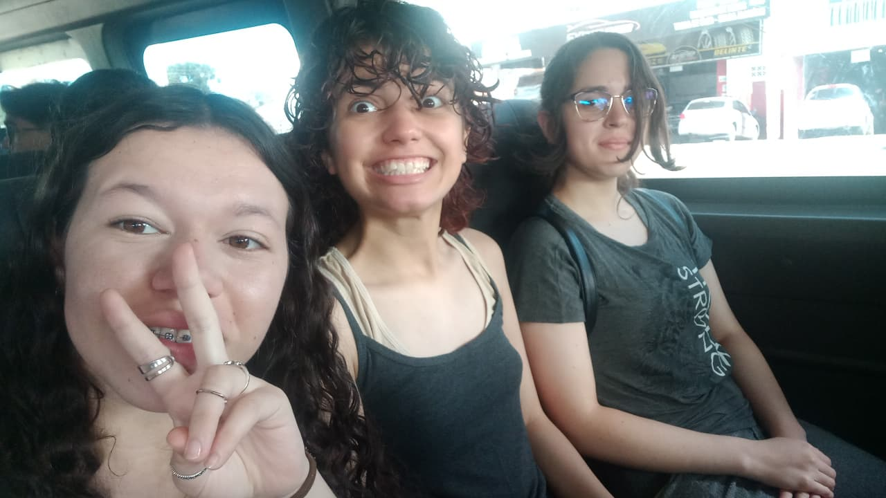
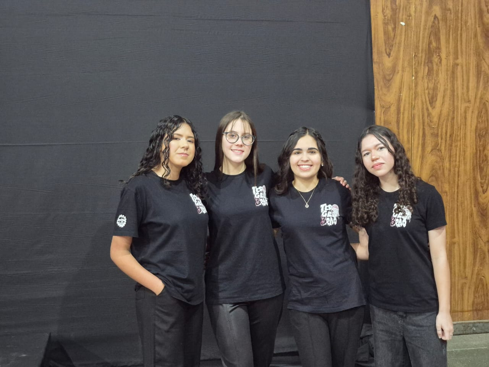

Momento em que meu pai comprou uma rosa

Esse foi um momento especial, quando meu pai comprou uma rosa.
💥 Viagem da Isabelle 💥
Curtidas: 0
Fui à praia em 2025. Para conseguir um bom lugar na areia, decidimos ir bem cedo. Mesmo assim, o sol já estava forte. Spoiler: eu esqueci de passar protetor solar. Resultado: me queimei toda, dos pés à cabeça, e tive que passar a última semana sem ir à escola por causa das queimaduras.
Aqui embaixo mostro alguns momentos da viagem: quando fomos para o mar, minha queimadura (que não dá para ver muito bem na foto) e também meu irmão aproveitando o milho na praia.



Esse foi um momento especial, quando meu pai comprou uma rosa.

Quando vimos esse prédio, ele parecia muito com o da série Dexter.

Esse foi um momento muito calmo.
Aproveitei esse cantinho de fotos para mostrar momentos com meus amigos.




A viagem foi para Balneário Camboriú , uma das praias mais famosas de Santa Catarina.